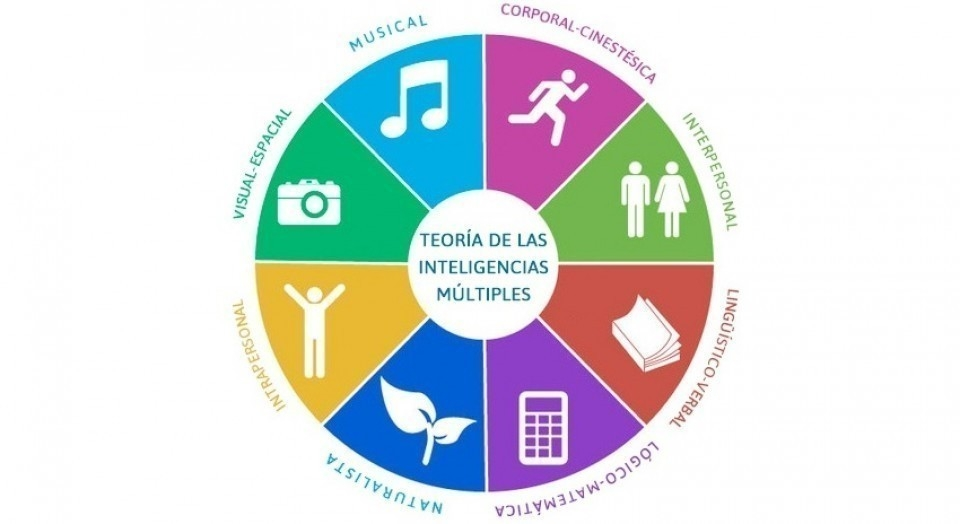

Averigua qué tipo de inteligencia tienes de acuerdo con la teoría de las inteligencias múltiples.
La Teoría de las Inteligencias Múltiples de Gardner propone que existen ocho tipos diferentes de inteligencia, y que de acuerdo con el tuyo puedes desempeñarte mejor en diferentes tipos de tareas: algunos son más aptos para tareas creativas, otros para las matemáticas, algunos para relacionarse con las personas.
Como dijo Albert Einstein, "todos somos unos genios, pero si juzgas a un pez por su habilidad de escalar un árbol, vivirá su vida entera creyendo que es estúpido". Esto significa que, para desarrollar al máximo nuestras capacidades, primero debemos conocer cuáles tenemos, y que todos somos diferentes.
Esta teoría fue desarrollada por Howard Gardner, un psicólogo, investigador y profesor de la Universidad de Harvard que ha sido reconocido en el ámbito científico por sus investigaciones acerca de las capacidades cognitivas. La teoría de las inteligencias múltiples lo hizo acreedor del Premio Príncipe de Asturias de Ciencias Sociales 2011.
Los tipos de inteligencia observados por Gardner son ocho: intrapersonal, interpersonal, visual-espacial, corporal-cinestésica, linguístico-verbal, lógico-matemática, naturalista y musical.
Reconocer el tipo de inteligencia predominante en ti y aprender más sobre ella puede servirte para desarrollar al máximo tu potencial y encontrarte con aptitudes que no sabías que tenías. ¡Descúbrelas!
La inteligencia intrapersonal es la facultad para comprender y controlar nuestros propios hábitos internos. Todos la tenemos en mayor o menor medida, pero quienes destacan en ella son capaces de acceder a sus propios sentimientos y emociones y reflexionar sobre éstos de una forma muy profunda.
Este tipo de inteligencia es la que permite la introspección y entender las razones por las cuales uno es de la manera que es, por eso quienes la tienen muy desarrollada suelen estar en paz consigo mismos.
Así como hay personas que tienen su inteligencia dirigida hacia sí mismos, otros tienen más desarrollada la inteligencia interpersonal, que es la que permite advertir ciertos aspectos de las conductas y sentimientos de las otras personas, más allá de lo que captan a simple vista los sentidos.
Este tipo de inteligencia permite una interpretación profunda de los gestos, las palabras, los objetivos y las metas de cada discurso y comportamiento humano. Pero además, estas personas tienen la capacidad de empatizar, es decir, de ponerse en el lugar de las demás personas.
Es un tipo de inteligencia muy valioso para quienes deben trabajar en equipo o manejando grupos de personas numerosos, ya que les resulta sencillo detectar y entender las circunstancias y problemas de los demás. Los buenos profesores, psicógolos y pedagogos suelen puntuar bien en este tipo de inteligencia descrita en la Teoría de las inteligencias múltiples.
La inteligencia musical, según Gardner, existe también en todas las personas, ya que forma parte de algo ancestral que han compartido todas las culturas. Sin embargo, en algunos está más latente, mientras que otras personas tienen las zonas del cerebro vinculadas con la composición, apreciación e interpretación de música mucho más desarrolladas.
Ellos suelen ser excelentes músicos, pero como toda inteligencia, puede entrenarse y perfeccionarse, por eso todos podemos progresar en ella.
Las habilidades corporales-cinestésicas o motrices son las que se requieren para manejar herramientas, para hacer deportes o para expresar ciertas emociones por medio del cuerpo.
La inteligencia corporal-cinestésica es la que poseen más desarrollada aquellas personas que tienen un mayor dominio sobre su cuerpo, y pueden ejercitarlo y expresar con él lo que desean. Los deportistas, los acróbatas o los bailarines son un ejemplo de lo que se puede lograr entrenando este tipo de inteligencia.
Las personas que tienen desarrollada su inteligencia lingüística poseen una capacidad mayor de comunicarse, no solo mediante las palabras y la escritura, sino también mediante la gestualidad, y todo tipo de lenguajes.
Políticos, escritores, poetas y periodistas requieren de unas habilidades especiales para comunicar sus ideas, por eso quienes tienen facilidad para desenvolverse en este tipo de inteligencia se desempeñan mejor en esas profesiones.
Todos nos comunicamos y la mayoría sabemos leer y escribir. Por eso este tipo de inteligencia es un ejemplo de que todos poseemos cada uno de los tipos de inteligencia de Gardner, pero realmente pueden estar desarrolladas en medidas muy diferentes.
Quienes destacan en inteligencia visual-espacial tienen la capacidad de observar el mundo y los objetos que los rodean desde diferentes perspectivas. Estas personas suelen tener la capacidad de idear imágenes mentales, dibujar y detectar detalles. También suelen tener un gran sentido personal de la estética.
Lo ideal para ellos es desarrollarse profesionalmente como pintores, fotógrafos, diseñadores, publicistas, arquitectos y creativos.
Durante décadas, se utilizaba la palabra "inteligencia" para denominar solamente a la inteligencia lógico-matemática. Este tipo de inteligencia es la que está vinculada a la capacidad de razonamiento lógico y a la resolución de problemas matemáticos. La rapidez para solucionar este tipo de problemas determina el nivel de inteligencia lógico-matemática que se tiene, y es la que fundamente los célebres test como el test de cociente intelectual (IQ).
Suelen destacar en ella científicos, economistas, académicos, ingenieros y matemáticos.
La inteligencia naturalista es la que permite detectar, diferenciar y categorizar los diferentes aspectos vinculados a la naturaleza. Quienes la desarrollan en su máximo potencial pueden entender los fenómenos relacionados a las especies animales y vegetales, al clima o a la geografía como ningún otro.
Gardner añadió esta categoría años más tarde, en 1995, ya que consideró necesario agregarla al notar su importancia para la supervivencia del ser humano en la Tierra.